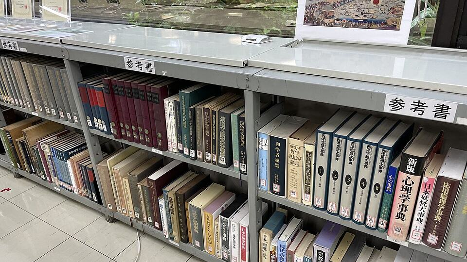

Nobel Edebiyat Ödülü 2026 ne zaman açıklanacak?

Görsel: Reference books in Sanko Library 1 · Eugene Ormandy · CC BY-SA 4.0 · Wikimedia Commons
Nobel duyuru haftası 5 Ekim 2026 Pazartesi günü başlıyor. İlk açıklama Fizyoloji veya Tıp dalında, TSİ 12.30'dan önce olmamak üzere yapılacak. Edebiyat Ödülü ise NobelPrize.org takvimine göre 8 Ekim Perşembe günü, en erken TSİ 14.00'te duyurulacak. Türkiye'de aynı günlerde TÜYAP Diyarbakır Kitap Fuarı sürüyor; iki takvim üst üste biniyor.
Nobel Edebiyat Ödülü 2026 hangi gün ve saatte açıklanacak?
NobelPrize.org'un yayımladığı takvime göre sıralama şöyle: 5 Ekim Fizyoloji veya Tıp, 6 Ekim Fizik, 7 Ekim Kimya, 8 Ekim Edebiyat, 9 Ekim Barış, 12 Ekim Ekonomi. Edebiyat duyurusu için verilen saat 13.00 CEST, yani TSİ 14.00.
Takvimdeki saatlerin yanında yazan ifade önemli: bunlar en erken saatler. Oylama uzarsa duyuru gecikebilir; her yıl birkaç dakikadan bir saate varan sapmalar görülür. Barış Ödülü ise Oslo'da, tek sabit saat olarak 11.00 CEST'te açıklanıyor. Tüm duyurular canlı yayımlanıyor.
Nobel Edebiyat Ödülü nasıl seçiliyor, adaylar neden 50 yıl gizli?
Aday gösterme hakkı dört gruba tanınmış: İsveç Akademisi ve benzer kurumların üyeleri, edebiyat ve dilbilim profesörleri, önceki Edebiyat Nobel'i sahipleri ve yazar birliklerinin başkanları. Formların Nobel Komitesi'ne ulaşması için son tarih 31 Ocak. Yani kazananın adı, duyurudan dokuz ay önce oluşan bir havuzdan çıkıyor.
Komite listeyi kademeli daraltıyor. Nisanda 15-20 adaylık bir ön liste, mayısta beş adlık öncelikli liste oluşturuluyor. Akademi üyeleri yaz boyunca bu beş yazarın yapıtlarını okuyor, oylama ekimde yapılıyor. Süreç boyunca hiçbir aşama dışarıya duyurulmuyor.
Gizlilik bir gelenek değil, kural. Nobel Vakfı tüzüğü adaylara ilişkin bilgilerin 50 yıl boyunca açıklanmasını yasaklıyor; bu yasak aday adlarını, aday gösterenleri ve komite değerlendirmelerini kapsıyor. Bugün erişilebilen aday listeleri bu nedenle yarım yüzyıl öncesine ait.
Nobel Edebiyat Ödülü favori listeleri nereden çıkıyor?
Her eylül dolaşıma giren favori listeleri İsveç Akademisi'nden gelmiyor. Kaynak, İngiltere merkezli bahis şirketlerinin açtığı oran piyasaları. Oranlar da içeriden bilgiye değil, oynanan bahislerin dağılımına göre değişiyor; yoğun bahis alan ad listenin başına çıkıyor.
Bu ayrımı bilmek okuru iki hatadan koruyor. Birincisi, bir yazarın oranının kısalması adaylığının doğrulandığı anlamına gelmiyor. İkincisi, listelerde yıllardır dönen adların çoğu hiç aday gösterilmemiş de olabilir; 50 yıllık gizlilik bunu kontrol etmeyi imkânsız kılıyor.
Nobel haftasında TÜYAP Diyarbakır Kitap Fuarı'nda neler var?
Diyarbakır 10. Kitap Fuarı 26 Eylül - 4 Ekim 2026 tarihleri arasında Mezopotamya Uluslararası Fuar ve Kongre Merkezi'nde. Giriş ücretsiz, ziyaret saatleri 10.00-19.00. Fuara 125 yayınevi, marka ve sivil toplum kuruluşu katılıyor; dokuz güne yayılan programda 73 etkinlik yer alıyor.
Program söyleşi, panel, tiyatro, şiir dinletisi ve atölyelerden oluşuyor. Genç ve profesyonel çizerlerin işlerinin sergilendiği İllüstratörler Duvarı ile birkaç sergi de alanda. Fuar, TÜYAP tarafından Türkiye Yayıncılar Birliği iş birliğiyle düzenleniyor.
Takvim açısından dikkat çeken nokta şu: fuarın kapanış günü 4 Ekim, Nobel duyurularının başlamasından bir gün önce. Yani Edebiyat Ödülü açıklandığında fuar sona ermiş olacak; imza günü planlayanlar için iki takvim kesişmiyor.
“Kentinin melankolik ruhunun izini sürerken kültürlerin çatışması ve iç içe geçmesi için yeni simgeler buldu.”
— İsveç Akademisi'nin Orhan Pamuk'a 2006 Nobel Edebiyat Ödülü gerekçesi, NobelPrize.org, 22 Eylül 2026
Takip etmek için
- NobelPrize.org'daki duyuru takvimi sayfasından saatlerin güncellenip güncellenmediğini 5 Ekim öncesinde kontrol edin.
- 8 Ekim günü TSİ 14.00'ten önce Nobel Ödülü'nün resmî canlı yayın kanallarını açın; saat en erken zamanı gösteriyor.
- kitapfuaridiyarbakir.com üzerinden 26 Eylül - 4 Ekim arasındaki günlük etkinlik ve imza programını takip edin.
Sık sorulan sorular
Nobel Edebiyat Ödülü 2026 hangi gün açıklanıyor?
NobelPrize.org takvimine göre 8 Ekim 2026 Perşembe günü, en erken 13.00 CEST yani TSİ 14.00'te. Saat en erken duyuru zamanını gösterir, gecikme olabilir.
Adayların adları neden açıklanmıyor?
Nobel Vakfı tüzüğü, adaylara ilişkin bilgilerin 50 yıl boyunca açıklanmasını yasaklıyor. Bu süre dolmadan resmî aday listesi öğrenilemiyor.
Türkiye'den Nobel Edebiyat Ödülü'nü kim kazandı?
Orhan Pamuk 2006 yılında Nobel Edebiyat Ödülü'nü aldı. 2026 ödülüne ilişkin herhangi bir sonuç henüz açıklanmadı.
Olgular şu yayıncıların haberlerinden derlendi: NobelPrize.org, Edebiyat Haber, Fuar Dergisi. Metnin tamamı TrendSaphiens tarafından yazıldı; kaynaklarla kelime örtüşmesi %0.0 (eşik %5). Kaynaklarda olmayan bilgi eklenmedi.